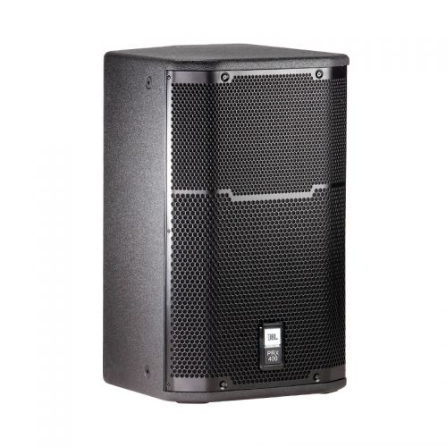

MONITOR DE ESCENARIO BIDIRECCIONAL 12" 1200W JBL PRX412M

Se el primero en dejarnos tu opinión
$9,059.99
SKU: H20-28880
Disponibilidad: Disponible
Marca: JBL
PRX412M es un sistema portátil de altavoces de doce vías, de doce pulgadas, diseñado para aplicaciones principales de refuerzo de sonido o monitoreo.